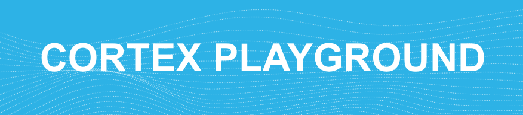
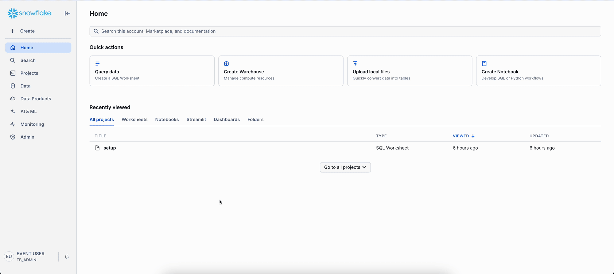
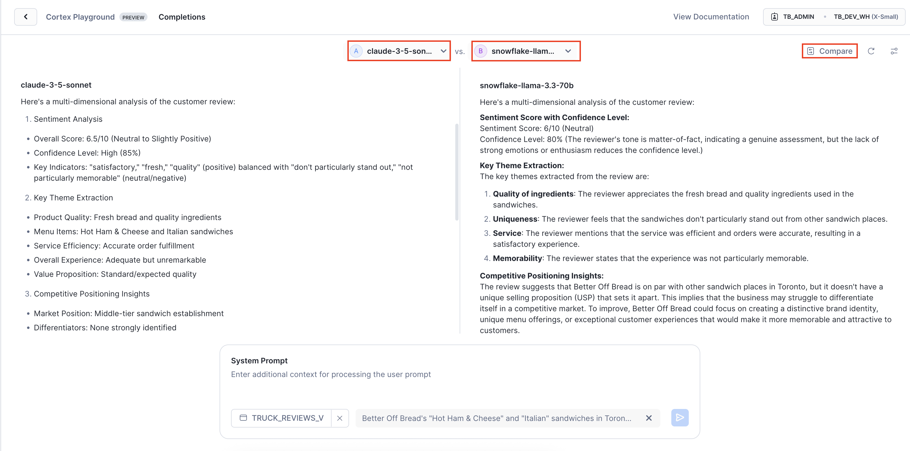
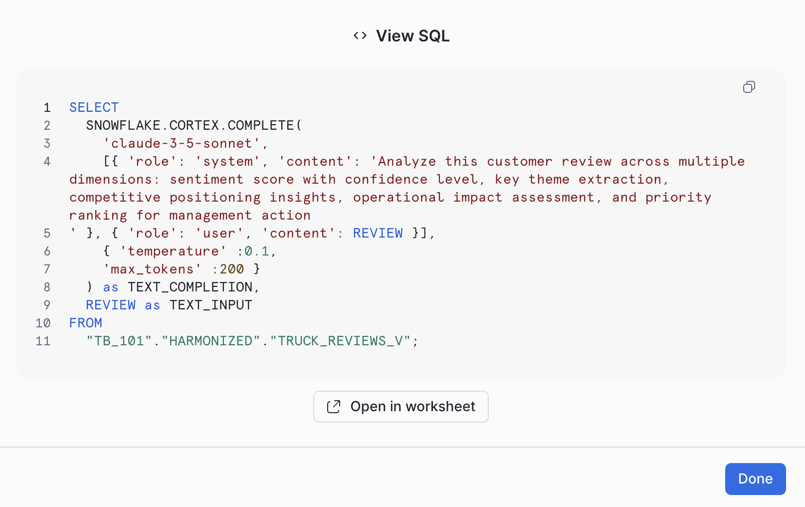
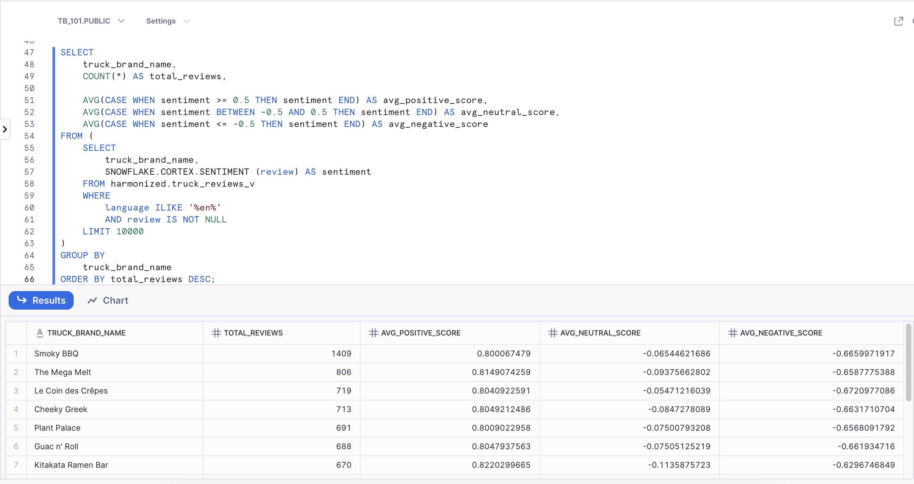
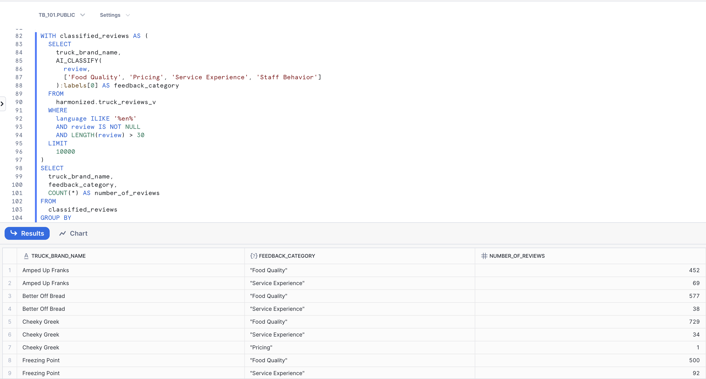
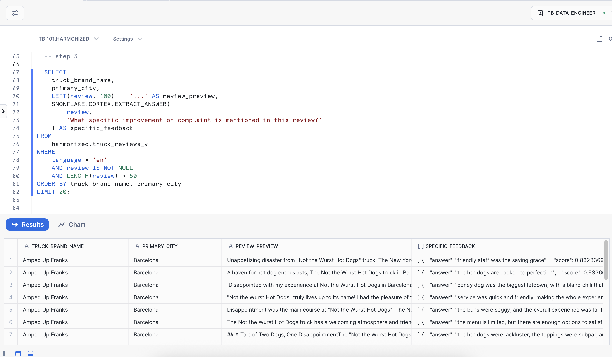
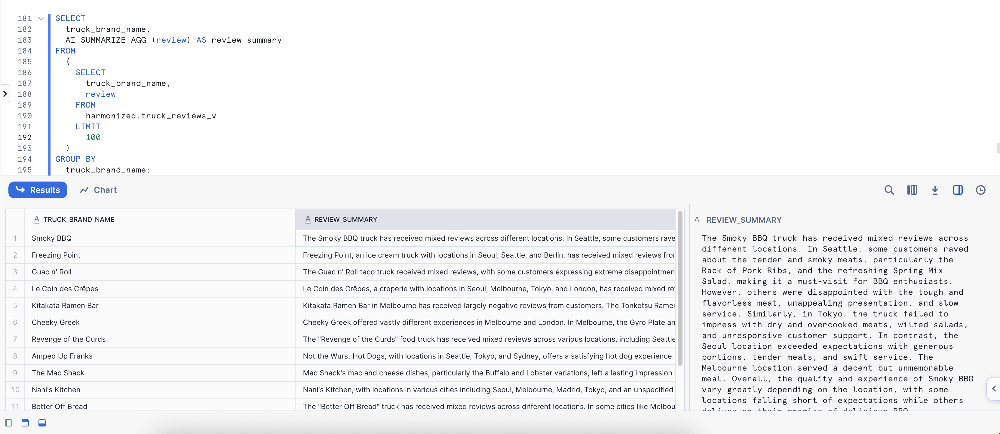

Objetivo: usar IA generativa directamente en SQL sobre las reviews de Tasty Bytes —sentimiento, clasificacion, extraccion y resumenes— sin APIs y sin mover los datos.
Completaste el LAB 0 (setup) (base TB_101, roles tb_admin/tb_analyst/tb_data_engineer, warehouses y datos de Tasty Bytes) y subiste los 7 archivos al stage @tb_101.public.archivos.
Rol y warehouse
Este lab corre como tb_analyst con el warehouse tb_analyst_wh; el setup ya le otorgo SNOWFLAKE.CORTEX_USER.
Workspaces
Crea un nuevo SQL File en Workspaces para pegar cada bloque.

Snowflake Cortex AI (quickstart Zero to Snowflake)
Como trabajar este lab
Empiezas en la UI (Cortex Playground) y luego pasas a SQL. Para la parte SQL abre Projects > Workspaces, crea un SQL File nuevo (+ Add new > SQL File) y nombralo lab3_cortex_aisql. En cada paso: lee la explicacion, pulsa Copiar, pega al final del SQL File, selecciona solo lo que pegaste y ejecuta con Ctrl/Cmd + Enter. Luego compara con Que deberias ver.
1
Comparar modelos en Cortex Playground
~2 min
UI
En este paso: Comparamos modelos de lenguaje lado a lado en el Playground para elegir el mas adecuado a cada caso.
Criterio de exito: Ves dos respuestas lado a lado, de dos LLM distintos, sobre la misma review de un food truck.
Antes de escribir SQL, prueba la IA generativa sin codigo. Cortex Playground te deja comparar LLM (Large Language Model) de distintos proveedores sobre los datos de tu cuenta, sin que salgan de Snowflake, para elegir el modelo adecuado para cada tarea de Tasty Bytes.
En Snowsight ve a AI & ML > Studio > Cortex Playground.
Haz clic en + Connect your data y elige TB_101 > HARMONIZED > TRUCK_REVIEWS_V; pulsa Let's go.
Columna de texto: REVIEW; columna de filtro: TRUCK_BRAND_NAME; pulsa Done.
Filtra por una marca (por ejemplo Better Off Bread) para elegir una review.

Conectar TRUCK_REVIEWS_V en Cortex Playground
Haz clic en Compare y elige un modelo distinto en cada panel (por ejemplo claude-sonnet-4-5 y un modelo llama).
Pide a ambos: "Resume esta review en una frase y di si el cliente volveria".
Compara estilo, precision y largo de las dos respuestas.

Comparacion lado a lado de dos modelos
Cada respuesta del Playground esta respaldada por SQL: haz clic en View Code y veras la llamada a AI_COMPLETE con tus parametros (modelo, temperature), lista para un SQL File.

View Code: el SQL detras del Playground
Tip
Lo que pruebes aqui se traduce directo a AI_COMPLETE('<modelo>', ...) en SQL, que es lo que haras en los siguientes pasos.
2
Preguntas libres a un LLM con AI_COMPLETE
~1 min
SQL
En este paso: Hacemos una pregunta de negocio a un LLM directamente desde SQL con AI_COMPLETE.
Criterio de exito: La consulta devuelve una columna RESPUESTA con 3 bullets generados por claude-sonnet-4-5.
Pasamos a SQL como tb_analyst (el setup ya le otorgo SNOWFLAKE.CORTEX_USER). AI_COMPLETE es la funcion detras del Playground: llama a un LLM desde SQL, sin APIs, sin llaves y sin mover los datos fuera de Snowflake.
SQLContexto y AI_COMPLETE
-- Cambia al rol de trabajoUSEROLE tb_analyst;
USEDATABASE tb_101;
USEWAREHOUSE tb_analyst_wh;
-- Consulta al LLM directamente desde SQLSELECTAI_COMPLETE('claude-sonnet-4-5',
'En 3 bullets: que debe medir una cadena de food trucks para crecer?') AS respuesta;
Que deberias ver
Una fila con la columna RESPUESTA: 3 bullets en espanol (por ejemplo ticket promedio, ventas por ubicacion, satisfaccion del cliente).
3
AI_SENTIMENT por marca y por aspecto
~2 min
SQL
En este paso: Medimos el sentimiento de las resenas por marca y por aspecto para ver donde estan las fortalezas y los problemas.
Criterio de exito: Una tabla por marca con positivas, negativas, neutras_mixtas y pct_positivas; y 5 reviews con sentimiento por aspecto.
Como se sienten los clientes con cada marca? AI_SENTIMENT devuelve un OBJECT; categories[0]:sentiment trae el sentimiento global (positive, negative, neutral o mixed). Contamos cada clase por marca sobre una muestra de 50 reviews en ingles.
SQLSentimiento por marca
-- Analiza una muestra de resenas con funciones de IAWITH muestra AS (
SELECT truck_brand_name, review
FROM harmonized.truck_reviews_v
WHERElanguage ILIKE '%en%'AND review ISNOTNULLLIMIT50-- muestra para el lab (~25 s); en produccion se corre sobre todo
)
SELECT
truck_brand_name,
COUNT(*) AS reviews,
COUNT_IF(s = 'positive') AS positivas,
COUNT_IF(s = 'negative') AS negativas,
COUNT_IF(s IN ('neutral','mixed')) AS neutras_mixtas,
ROUND(100 * positivas / reviews, 1) AS pct_positivas
FROM (
SELECT truck_brand_name,
AI_SENTIMENT(review):categories[0]:sentiment::STRING AS s
FROM muestra
)
GROUPBY truck_brand_name
ORDERBY pct_positivas DESC;

Analisis de sentimiento de reviews (quickstart)
Que deberias ver
Una fila por marca con REVIEWS, POSITIVAS, NEGATIVAS, NEUTRAS_MIXTAS y PCT_POSITIVAS, ordenada de mayor a menor. Tarda unos ~25 s.
Bug real: la IA en el WHERE junto a un LIMIT tardo 303 s
En la validacion, poner AI_SENTIMENT(...) en el WHERE junto a un LIMIT hizo que la IA se evaluara sobre muchas filas (303 s). La solucion es tomar la muestra en un CTE primero (WITH muestra AS (... LIMIT 50)) y aplicar la IA solo sobre esa muestra. Por eso este lab muestrea siempre en un CTE: el LIMIT va ANTES de llamar a la IA.
Si le pasas una lista de aspectos, AI_SENTIMENT mide cada dimension del negocio por separado: una review puede ser positiva en comida y negativa en tiempo de espera.
SQLSentimiento por aspecto
-- Sentimiento por ASPECTO del negocioSELECT
review,
AI_SENTIMENT(review, ['comida', 'precio', 'servicio', 'tiempo de espera']) AS sentimiento_por_aspecto
FROM harmonized.truck_reviews_v
WHERElanguage ILIKE '%en%'AND review ISNOTNULLLIMIT5;
Que deberias ver
5 reviews; SENTIMIENTO_POR_ASPECTO es un JSON con categories: el overall mas una entrada por comida, precio, servicio y tiempo de espera, cada una con su sentimiento.
4
AI_CLASSIFY: de que hablan los clientes
~1 min
SQL
En este paso: Clasificamos automaticamente las resenas por tema para saber de que hablan los clientes sin leerlas una a una.
Criterio de exito: Conteos de reviews por marca y categoria (Calidad de comida, Precio, Experiencia de servicio, Actitud del personal).
Clasificar texto libre en categorias de negocio sin entrenar ningun modelo: le das las etiquetas y AI_CLASSIFY elige la mejor para cada review (labels[0]). Asi sabes que tema domina en cada marca.
SQLClasificar reviews
-- Analiza una muestra de resenas con funciones de IAWITH clasificadas AS (
SELECT
truck_brand_name,
AI_CLASSIFY(review, ['Calidad de comida', 'Precio', 'Experiencia de servicio', 'Actitud del personal']):labels[0]::STRING AS categoria
FROM harmonized.truck_reviews_v
WHERElanguage ILIKE '%en%'AND review ISNOTNULLANDLENGTH(review) > 30LIMIT150
)
SELECT truck_brand_name, categoria, COUNT(*) AS reviews
FROM clasificadas
GROUPBYALLORDERBY truck_brand_name, reviews DESC;

Clasificacion de reviews en categorias (quickstart)
Que deberias ver
Filas TRUCK_BRAND_NAME / CATEGORIA / REVIEWS, con la categoria mas frecuente primero dentro de cada marca.
5
AI_EXTRACT: datos puntuales desde texto libre
~1 min
SQL
En este paso: Extraemos datos puntuales desde texto libre de las resenas y los dejamos como columnas estructuradas.
Criterio de exito: Cada una de las 8 reviews trae una columna EXTRACCION con queja_principal, plato_mencionado y volveria.
AI_EXTRACT convierte texto en campos estructurados: en responseFormat defines cada campo con una pregunta en lenguaje natural. Elegimos reviews que hablan de comida fria, esperas o decepcion. De nuevo, la muestra se toma antes de llamar a la IA.
SQLExtraer campos
-- Analiza una muestra de resenas con funciones de IAWITH muestra AS (
SELECT truck_brand_name, review
FROM harmonized.truck_reviews_v
WHERElanguage ILIKE '%en%'AND review ISNOTNULLAND (review ILIKE '%cold%'OR review ILIKE '%wait%'OR review ILIKE '%disappoint%')
LIMIT8
)
SELECT
truck_brand_name,
review,
AI_EXTRACT(
text => review,
responseFormat => {
'queja_principal': 'Cual es la queja principal del cliente? Responde en espanol',
'plato_mencionado': 'Que plato o producto menciona?',
'volveria': 'El cliente volveria? (SI / NO / NO SE)'
}
):response AS extraccion
FROM muestra;

Extraccion de informacion desde reviews (quickstart)
Que deberias ver
8 filas; EXTRACCION es un JSON con queja_principal (en espanol), plato_mencionado y volveria.
6
Resumen ejecutivo con AI_SUMMARIZE_AGG + AI_TRANSLATE
~1 min
SQL
En este paso: Resumimos todas las resenas de cada marca y las traducimos al espanol para entregar un resumen ejecutivo.
Criterio de exito: Una fila por marca (Freezing Point, Better Off Bread, Kitakata Ramen Bar) con un resumen ejecutivo en espanol.
AI_SUMMARIZE_AGG es una funcion de agregacion: igual que SUM, resume muchas filas, pero produce un solo texto por grupo. AI_TRANSLATE lo lleva del ingles al espanol para el comite directivo.
SQLResumen por marca
-- Resume las resenas por marca y las traduceSELECT
truck_brand_name,
AI_TRANSLATE(AI_SUMMARIZE_AGG(review), 'en', 'es') AS resumen_ejecutivo
FROM (
SELECT truck_brand_name, review
FROM harmonized.truck_reviews_v
WHERE truck_brand_name IN ('Freezing Point', 'Better Off Bread', 'Kitakata Ramen Bar')
ANDlanguage ILIKE '%en%'AND review ISNOTNULLLIMIT90
)
GROUPBY truck_brand_name;

Resumen de reviews por marca (quickstart)
Momento wow
Decenas de reviews en ingles convertidas en un resumen ejecutivo en espanol por marca, con una sola consulta SQL y un GROUP BY.
Que deberias ver
3 filas, una por marca, con RESUMEN_EJECUTIVO en espanol (fortalezas y quejas recurrentes).
7
Bonus: Cortex Code cruza sentimiento y ventas
~1 min
UI
En este paso: Usamos Cortex Code para cruzar el sentimiento de los clientes con las ventas mediante lenguaje natural.
Criterio de exito: Cortex Code genera y ejecuta el SQL que relaciona sentimiento con ventas por marca y te muestra una grafica.
Cortex Code (CoCo) es el asistente agentico de Snowflake: escribe, ejecuta y explica SQL por ti sobre tus propios datos.
Abre Cortex Code en el panel derecho de Snowsight.
Pega el prompt de abajo.
Revisa el SQL que propone, apruebalo y mira la grafica.
Prompt para Cortex Code
Analiza si el sentimiento de las reviews se relaciona con las ventas por marca en TB_101 y muestrame una grafica
Que deberias ver
CoCo une las reviews (TRUCK_REVIEWS_V) con las ventas por marca, muestra una tabla con sentimiento y ventas, y una grafica comparativa.